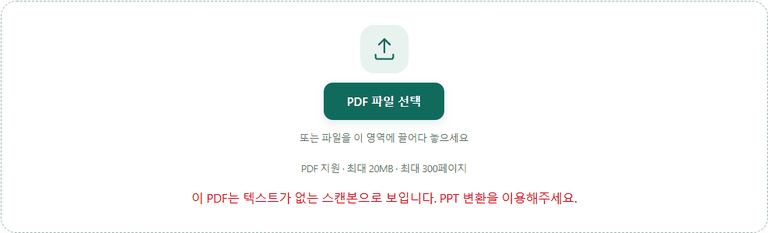

IMAGE TOOLBOX / GUIDE
PDF를 워드(Word)로 변환하는 방법
설치나 회원가입 없이, 브라우저에서 바로 .docx로 변환할 수 있습니다.
먼저 결론: 글자는 옮겨지고, 표와 서식은 옮겨지지 않습니다
PDF→Word 변환은 PDF 안의 글자만 뽑아서 워드 문단으로 다시 씁니다. 받은 PDF 보고서의 문장을 고쳐 쓰거나 다른 문서에 인용하는 용도에는 잘 맞지만, 원본과 똑같은 모양의 워드 문서를 기대하면 실망하게 됩니다. 아래는 실제로 변환해 본 결과입니다.
직접 변환해 본 결과
제목, 본문 문단, 4×4 표, 번호 목록이 들어간 3페이지짜리 보고서 PDF(35.2KB)를 Word로 바꿨습니다.
| 원본 PDF에 있던 것 | Word 파일에서 |
|---|---|
| 본문 글자(약 3,200자) | 모두 옮겨짐 |
| 제목의 큰 글씨·굵기 | 본문과 같은 일반 글씨로 바뀜(글씨 크기·스타일 정보 없음) |
| 4×4 표 | 표가 사라지고 칸 안의 글자가 한 문단으로 이어짐 (예: "항목 1월 2월 3월 방문자 1,204 1,530 1,877 …") |
| 번호 목록 | 번호가 붙은 일반 문단으로 남음 |
| 페이지 구분 | 원본 페이지마다 워드에서도 나뉨 |
변환은 0.3초 만에 끝났고, 결과 파일은 8.8KB로 원본보다 작았습니다. 글자만 남았기 때문입니다. 표가 많은 문서를 바꾸면 숫자들이 한 줄로 이어져 나오므로, 표는 원본을 보면서 워드에서 다시 만드는 편이 빠릅니다. 표가 실제로 어떻게 무너지는지는 PDF 변환 정확도 테스트에서 더 자세히 다뤘습니다.
스캔한 PDF는 변환되지 않습니다
종이를 스캔해서 만든 PDF는 페이지 전체가 하나의 그림이라 뽑아낼 글자가 없습니다. 스캔 문서 4페이지짜리 PDF를 넣어 보니 아래처럼 안내가 나오고 변환이 멈췄습니다. 이 사이트는 그림 속 글자를 읽어 내는 OCR 기능이 없으므로, 스캔본은 페이지를 그림 그대로 옮기는 PDF→PPT 변환을 쓰거나, OCR을 지원하는 프로그램을 이용해야 합니다.

사용 방법
1. PDF 변환 도구의 "PDF → Word·PPT·Excel" 탭에서 PDF를 선택합니다(최대 20MB·300페이지).
2. 출력 형식의 기본값은 PowerPoint이므로 Word (.docx)를 직접 고릅니다.
3. "변환하기"를 누르고 다운로드 버튼으로 받습니다. 결과는 MS 워드, 한컴오피스, 구글 문서에서 열립니다.
자주 묻는 질문
스캔한 PDF도 워드로 변환되나요?
아니요. 스캔본에는 뽑아낼 글자가 없어서 "텍스트가 없는 스캔본" 안내가 나옵니다. 이 사이트는 OCR(그림 속 글자 인식)을 지원하지 않으므로, 페이지를 그림 그대로 옮기는 PDF→PPT 변환을 쓰거나 OCR 프로그램을 이용하세요.
표나 이미지, 서식도 그대로 옮겨지나요?
아니요. 테스트에서 4×4 표는 칸 안의 글자만 줄글로 남았고, 제목의 큰 글씨와 굵기도 일반 글씨가 됐습니다. 이미지는 옮겨지지 않습니다.
문단이 이상하게 나뉘거나 합쳐져요
문단은 줄 사이 간격을 기준으로 자동으로 나눕니다. 여러 단으로 된 문서나 표 안의 글자는 원본과 다르게 나뉠 수 있습니다.
몇 페이지까지 변환할 수 있나요?
PDF 파일 최대 20MB, 최대 300페이지까지 지원합니다.
다운로드한 파일은 어떤 프로그램에서 열리나요?
.docx 형식이라 Microsoft Word, 한컴오피스, 구글 문서 등 대부분의 워드 프로그램에서 열립니다.
PDF가 서버로 전송되나요?
아니요. 글자 추출과 워드 파일 생성은 모두 브라우저 안에서 이뤄집니다.